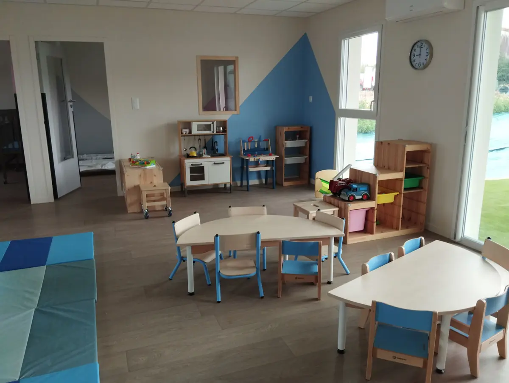
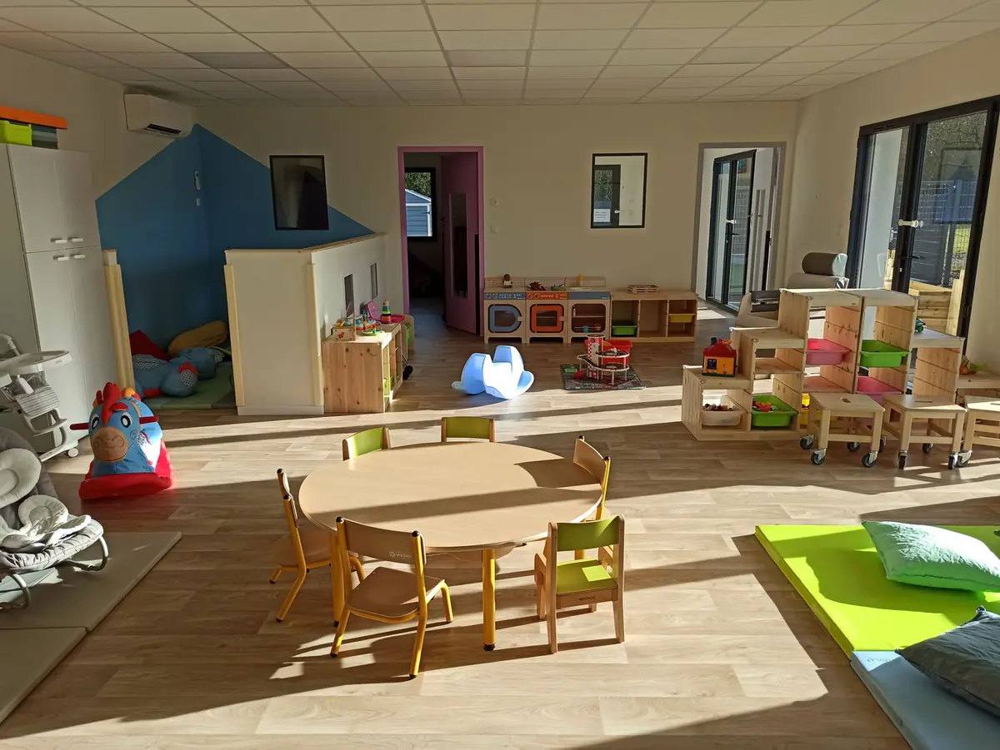
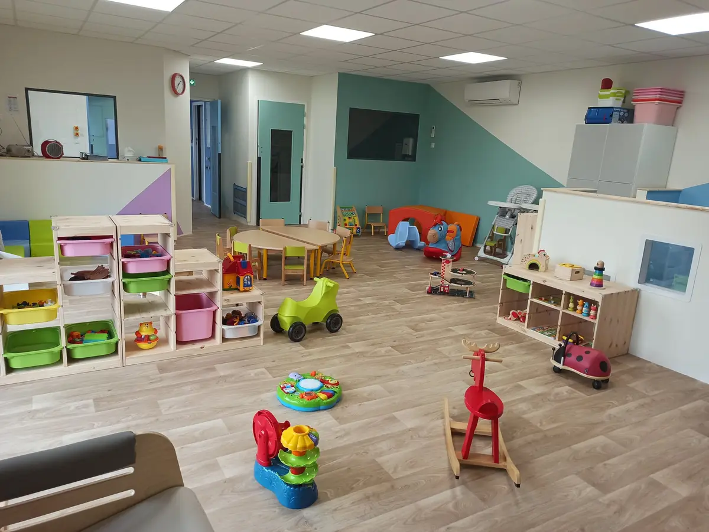
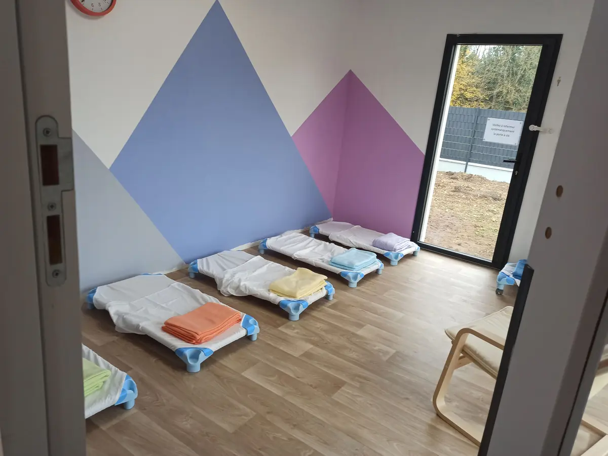
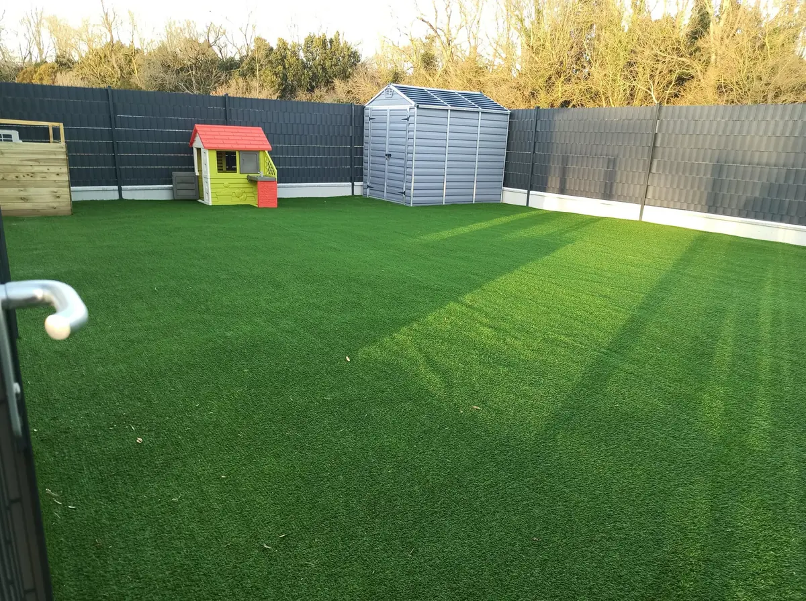
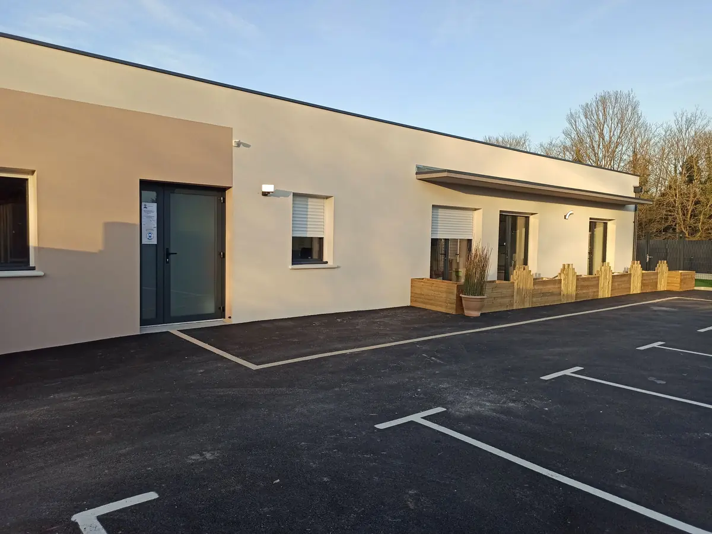

Loupiala Benon · depuis janvier 2021
Micro-crèche à Benon
Notre toute première maison, ouverte en janvier 2021 au cœur de l'Aunis. Un cocon lumineux de 12 places, avec un grand jardin, un potager… et des rencontres régulières avec nos voisins de l'EHPAD.

Informations pratiques
- Adresse
- 7 rue du Château Musset
17170 Benon (Charente-Maritime)
Itinéraire (nouvel onglet) - Téléphone
- 05 46 50 59 46 · gestion : 06 68 63 02 76
- Accueil
- 12 enfants de 10 semaines à 4 ans — régulier, occasionnel ou d'urgence, de 1 à 5 jours par semaine
- Horaires
Horaires d'ouverture Lundi 7h45 – 18h30 Mardi 7h45 – 18h30 Mercredi 7h45 – 18h30 Jeudi 7h45 – 18h30 Vendredi 7h45 – 18h30 Samedi Fermé Dimanche Fermé
La maison
Un cocon neuf, lumineux et sécurisé
Première crèche Loupiala, Benon a ouvert ses portes le lundi 18 janvier 2021. Depuis, elle accueille chaque jour jusqu'à 12 enfants dans un bâtiment neuf, pensé de A à Z pour les tout-petits.
Sa particularité : des rencontres intergénérationnelles régulières avec l'EHPAD de Benon — chants, cuisine, balades, motricité, séances Snoezelen… Des moments précieux, pour les petits comme pour les grands.
Ce que vous y trouverez
- Un espace de vie de plus de 50 m² : motricité, imitation, lecture, coin bébés
- Deux dortoirs séparés, pour respecter le sommeil de chacun
- Un grand extérieur avec aire de jeux et potager
- Repas, lait infantile, couches et produits d'hygiène fournis
- Un parking au plus près de l'entrée





Au quotidien
Le même projet dans nos trois crèches
Une éducatrice de jeunes enfants à la direction, 4 à 5 professionnelles diplômées de la petite enfance, et un projet pédagogique centré sur le rythme de chaque enfant.
Éveil musical et sonore
Comptines, instruments et intervenants spécialisés selon les années.
Langue des signes
Des ateliers de signes pour communiquer avant les mots.
Jardinage et potager
On sème, on arrose, on goûte : chaque crèche a son potager.
Médiation animale
Des rencontres douces avec les animaux, encadrées par un intervenant.
Moments sensoriels
Jeux de lumière, malle aux trésors, bouteilles sensorielles fabriquées par l'équipe.
Éveil corporel et motricité
Parcours, modules, draisiennes et toboggan au jardin.
Familles du secteur
Une crèche pour Benon et les communes voisines
Nous accueillons les enfants quel que soit votre lieu de résidence ou de travail. Beaucoup de familles viennent de Benon et des communes proches : Courçon, Saint-Sauveur-d'Aunis, Ferrières, La Laigne, Cramchaban, Saint-Jean-de-Liversay, Nuaillé-d'Aunis et La Ronde.
Vous travaillez sur l'axe La Rochelle – Niort ? Nos crèches de Benon et du Thou sont pensées pour les trajets domicile-travail vers La Rochelle, Surgères et Niort.
Nos autres micro-crèches
Depuis 2024
Loupiala Le Thou
7 rue Saint-Exupéry, 17290 Le ThouUne place à Benon pour votre enfant ?
Faites votre demande de pré-inscription pour Loupiala Benon ou appelez-nous : nous vous recontactons pour organiser une visite.